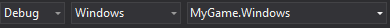
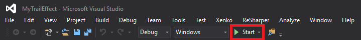
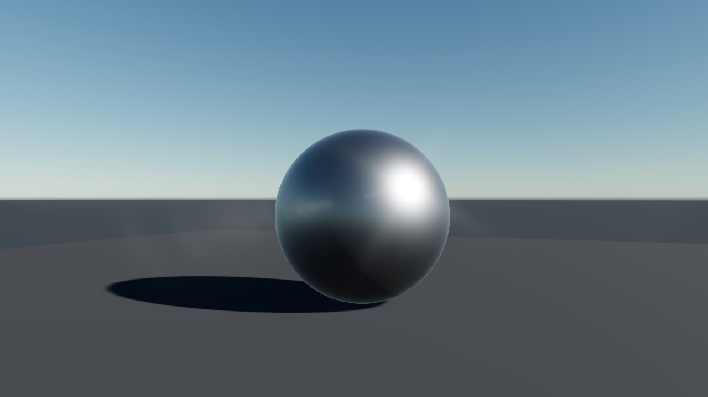

ゲームの起動
初級
このページでは、Game Studio または Visual Studio を使用してゲームを起動する方法を説明します。
Game Studio からゲームを起動する
Note
Game Studio では、Windows ストア プラットフォーム用または UWP (ユニバーサル Windows プラットフォーム) プラットフォーム用のゲームは起動できません。これらのプラットフォーム用のゲームを起動するには、Visual Studio を使用します (後述)。
ツールバーで、対象のプラットフォームを選択します。
Note
プロジェクトを作成するときに［Create a new game］ダイアログで選択したプラットフォームだけを選択できます。プロジェクトに新しいプラットフォームを追加する方法については、「プラットフォームを追加または削除する」を参照してください。
ゲームを実行するには、ツールバーの
 をクリックするか、または F5 キーを押します。
をクリックするか、または F5 キーを押します。
［Output］ウィンドウに、ビルドの進行状況が表示されます。
ビルドが完了すると、選択したプラットフォームでゲームが開始します。
Visual Studio からゲームを起動する
Game Studio のツールバーで
 (［Open in IDE］) をクリックして、Visual Studio を起動します。
(［Open in IDE］) をクリックして、Visual Studio を起動します。Visual Studio のツールバーで、スタートアップ プロジェクトとして適切なプロジェクトを設定します。

スタートアップ プロジェクトの構成が自動的に更新されます。
Tip
右側の［ソリューション エクスプローラー］で、プロジェクトを確認できます。プロジェクトのファイル名の拡張子が、プラットフォームを示します (例：.Android、.iOS など)。
構成とプラットフォームが適切に対応していることを確認します。
-
デバッグなしでゲームを開始するには、Ctrl + F5 キーを押します。
デバッグありでゲームを開始するには、［スタート］をクリックするか、F5 キーを押します。

境界を削除する
既定では、ゲームを実行するとウィンドウの境界が表示されます。
| 境界がある場合 | 境界がない場合 |
|---|---|
 |
 |
境界なしでゲームを実行するには、次のコマンドを使用します。
Game.Window.IsBorderLess = true;
次に例を示します。
using Stride.Engine;
namespace MyGame
{
public class MyScript : StartupScript
{
public override void Start()
{
base.Start();
Game.Window.IsBorderLess = true;
}
}
}